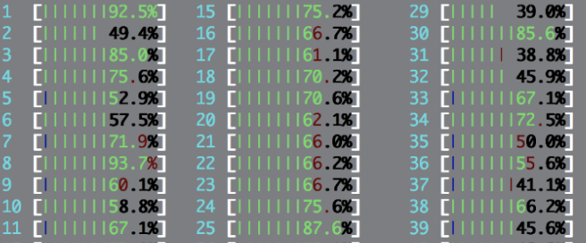

to see the diversity in the swarm communication.")


Hi, I am a postdoctoral researcher at the Computational Social Science department in GESIS - Leibniz Institute for the Social Sciences. I finished my Ph.D. at the School of Computing in Florida Tech and completed my Master's (thesis) and Bachelor's (final project) degrees in Computer Engineering at Escola Politécnica de Pernambuco in the University of Pernambuco. Here you can get preprints of my papers without fighting against paywalls, and my CV.
| NEWS | ||
| 10/06/19 | Submit your work to Structure and Dynamics of Crime, a special issue in the Applied Network Science journal. | |
| 18/01/19 | We are organizing the fourth NetCrime (Symposium on the Structure and Mobility of Crime) at NetSci 2019. | |
| 10/01/19 | Our preprint with an overview of spatial concentration and temporal regularities in crime is out on arXiv. | |
| 09/11/18 | Check out our new preprint on computational swarm intelligence and network science. | |
| 27/09/18 | Read our post on the SpringerBlog about listening to the changes in the urban rhythms. | |
| 26/09/18 |
Our latest work on temporal regularities in crime is online in EPJ Data Science. |
|
| 07/04/18 | I gave a short tutorial at Complexity72h on performing embarrassingly parallel data analysis with IPython. |  |